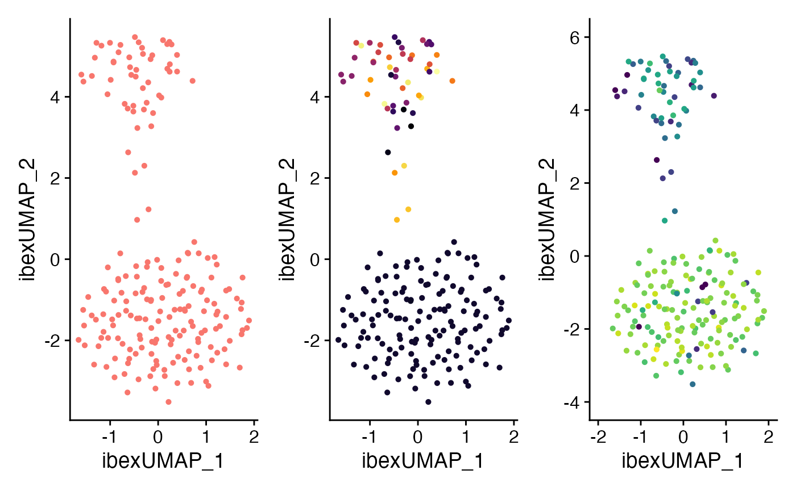
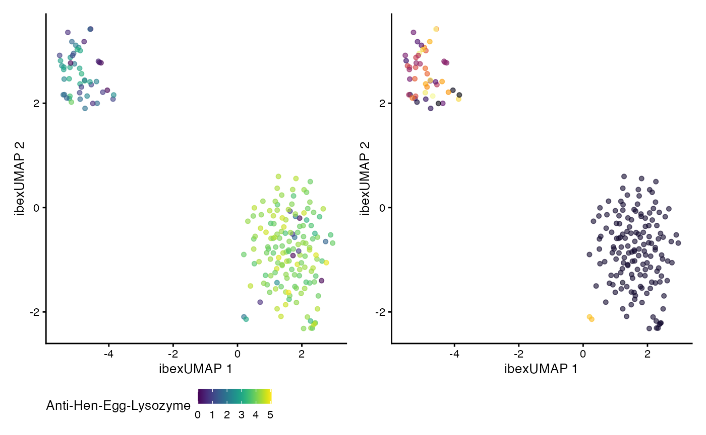

Combining Deep Learning and BCRs with Ibex
Compiled: March 10, 2025
Source:vignettes/articles/Ibex.Rmd
Ibex.RmdIntroduction
The idea behind Ibex is to combine BCR CDR3 amino acid information with phenotypic RNA/protein data to direct the use of single-cell sequencing towards antigen-specific discoveries. This is a growing field - specifically TESSA uses amino acid characteristics and autoencoder as a means to get a dimensional reduction. Another option is CoNGA, which produces an embedding using BCR and RNA. Ibex was designed to make a customizable approach to this combined approach using R.
More information is available at the Ibex GitHub Repo.
Installation
devtools::install_github("BorchLab/Ibex")The Data Set
The data used here are derived from 10x Genomics’ 2k BEAM-Ab Mouse HEL data set, consisting of splenocytes from transgenic mice engineered to recognize Hen Egg Lysozyme (HEL). These splenocytes were labeled with a small antigen panel: SARS-TRI-S, gp120, H5N1, and a negative control.
To illustrate the Ibex framework, we subset to a smaller set of 200
cells (including some dominant clones) and convert the Seurat object
into a SingleCellExperiment. The resulting “ibex_example” object stores
all the necessary data—RNA expression, antigen capture (BEAM) features,
BCR contig annotations, and computed dimensional reductions—ready for
downstream Ibex analyses. The object is saved
(ibex_example.rda), along with the contig information
(ibex_vdj.rda), ensuring that the integrated data set can
be readily reloaded and explored in subsequent steps.
library(scRepertoire)
library(Seurat)
library(dplyr)
library(SummarizedExperiment)
library(SingleCellExperiment)
################################## scRNA/ADT loading and processing
tmp <- Read10X("~/data/filtered_feature_bc_matrix")
SeuratObj <- CreateSeuratObject(counts = tmp$`Gene Expression`)
beam_assay <- CreateAssayObject(counts = tmp$`Antigen Capture`)
SeuratObj[["BEAM"]] <- beam_assay
SeuratObj <- subset(SeuratObj, subset = nFeature_RNA > 100)
SeuratObj <- RenameCells(object = SeuratObj, new.names = paste0("BEAM.sample_", rownames(SeuratObj[[]])))
SeuratObj[["mito.genes"]] <- PercentageFeatureSet(SeuratObj, pattern = "^mt-")
# Filtering step
standev <- sd(log(SeuratObj$nFeature_RNA)) * 2.5 #cutting off above standard deviation of 2.5
mean <- mean(log(SeuratObj$nFeature_RNA))
cut <- round(exp(standev + mean))
SeuratObj <- subset(SeuratObj, subset = mito.genes < 10 & nFeature_RNA < cut)
# Processing and Adding Contig Info
contigs <- read.csv("~/data/2k_BEAM-Ab_Mouse_HEL_5pv2_2k_BEAM-Ab_Mouse_HEL_5pv2_vdj_b_filtered_contig_annotations.csv")
clones <- combineBCR(contigs, samples = "BEAM.sample", removeNA = TRUE)
SeuratObj <- combineExpression(clones, SeuratObj, cloneCall = "aa")
# Subset only cells with BCR and Heavy Chain
cell.idx <- intersect(which(!is.na(SeuratObj$CTaa)), which(!is.na(stringr::str_split(SeuratObj$CTaa,
"_", simplify = TRUE)[, 1])))
SeuratObj <- subset(SeuratObj, cells = colnames(SeuratObj)[cell.idx])
# Processing RNA
DefaultAssay(SeuratObj) <- "RNA"
SeuratObj <- NormalizeData(SeuratObj, verbose = FALSE) %>%
FindVariableFeatures(verbose = FALSE) %>%
quietBCRgenes() %>%
ScaleData(verbose = FALSE) %>%
RunPCA(verbose = FALSE)
# Removing negative control + B Cells
DefaultAssay(SeuratObj) <- "BEAM"
SeuratObj <- subset(SeuratObj, subset = `negative-control` < 100, slot = "counts")
# Processing BEAM
VariableFeatures(SeuratObj) <- rownames(SeuratObj[["BEAM"]])
SeuratObj <- NormalizeData(SeuratObj, normalization.method = "CLR", margin = 2, ) %>%
ScaleData(verbose = FALSE) %>%
RunPCA(verbose = FALSE, reduction.name = "apca")
DefaultAssay(SeuratObj) <- "RNA"
################################### Making Example Data Set for Ibex
# Subset nondominate clones + random sampling of dominant
set.seed(42)
cell.idx <- unique(c(which(!grepl("CANWDGDYW", SeuratObj$CTaa)), sample(seq_len(nrow(SeuratObj[[]])),
154)))
ibex_example <- SeuratObj
saveRDS(ibex_example, file = "Ibex_FullExample.rds")
# Forming Example Data set in SCE format
ibex_example <- subset(ibex_example, cells = colnames(ibex_example)[cell.idx])
PCA <- Embeddings(ibex_example[["pca"]])
APCA <- Embeddings(ibex_example[["apca"]])
BEAM_counts <- GetAssayData(ibex_example, slot = "counts", assay = "BEAM")[1:4, ]
BEAM_data <- GetAssayData(ibex_example, slot = "data", assay = "BEAM")[1:4, ]
ibex_example <- as.SingleCellExperiment(ibex_example)
altExp(ibex_example, "BEAM") <- SummarizedExperiment(assays = list(counts = as.matrix(BEAM_counts),
logcounts = as.matrix(BEAM_data)), colData = colData(ibex_example))
reducedDim(ibex_example, "pca") <- PCA
reducedDim(ibex_example, "apca") <- APCA
# Saving the built-in data set
save(ibex_example, file = "ibex_example.rda", compress = "xz")
ibex_vdj <- contigs
save(ibex_vdj, file = "ibex_vdj.rda", compress = "xz")Loading the Data Object
For the purpose of the vignette, will use the built-in data set ibex_example, but will convert it into a Seurat object.
Getting Expanded Sequences
The function combineExpandedBCR() extends the
functionality of combineBCR() from the scRepertoire package
by first concatenating the CDR1, CDR2, and CDR3 sequences into a single
expanded variable. This approach retains additional information from the
BCR variable regions before calling combineBCR() to
consolidate BCR sequences into clones. This will allow for use of
expanded sequence models which we will detail below.
Function Parameters
The combineExpandedBCR() function supports the following
parameters:
| Parameter | Description | Default |
|---|---|---|
input.data |
List of data frames containing BCR sequencing results. | Required |
samples |
Character vector labeling each sample. | Required |
ID |
Additional sample labeling (optional). | NULL |
call.related.clones |
Whether to group related clones using nucleotide sequences and V genes. | TRUE |
threshold |
Normalized edit distance for clone clustering. | 0.85 |
removeNA |
Remove chains without values. | FALSE |
removeMulti |
Remove barcodes with more than two chains. | FALSE |
filterMulti |
Select highest-expressing light and heavy chains. | TRUE |
filterNonproductive |
Remove nonproductive chains if the column exists. | TRUE |
combined.BCR <- combineExpandedBCR(input.data = list(ibex_vdj),
samples = "Sample1",
filterNonproductive = TRUE)
head(combined.BCR[[1]])[,c(1,11)]## barcode
## 1 Sample1_CATCAGAAGTACGATA-1
## 2 Sample1_CTCGAGGGTCATCGGC-1
## 3 Sample1_AGCTTGAGTTTAAGCC-1
## 4 Sample1_ACGCCGATCATGCATG-1
## 5 Sample1_CAGGTGCAGTGTTAGA-1
## 6 Sample1_GGCGTGTGTCATATGC-1
## CTaa
## 1 GFTFSDY-SSGSST-CARDPYYYGSSPDYW_KASQDINKYIA-YTSTLQP-CLQYDNLTWTF
## 2 GYSITSGY-SYDGS-CARDENGYYYGSRYYAMDYW_KASDHINNWLA-GATSLET-CQQYWSTPFTF
## 3 GYTFTSY-NPSNGG-CTRGGWDGYYYTMDYW_KASQSVDYDGDSYMN-AAANLES-CQQSNEDPRTF
## 4 GYTFTSY-DPNSGG-CARSRGTRWYFDVW_KASQSVDYDGDSYMN-AASNLES-CQQSNEDPYTF
## 5 GYTFTIY-NPSNGG-CARRTSDSSGYSYW_KASQSVDYDGDSYMN-AASNLES-CQQSNEDPRTF
## 6 GYTFTNY-NPSNGG-CSRGGWGSGALDYW_KASQSVDYDGDSYMN-AASNLES-CQQSNEDPRTFWe can attach the expanded sequences to the Seurat or Single-Cell
Experiment objects using the scRepertoire combineExpression()
function.
Available Models
Ibex offers a diverse set of models built on various architectures and encoding methods. Currently, models are available for both heavy and light chain sequences in humans, as well as heavy chain models for mice. Models for CDR3-based sequences have been trained on sequences of 45 residues or fewer, while models for CDR1/2/3-based sequences are specific to sequences of 90 amino acids or fewer.
A full list of available models is provided below:
model.meta.data <- read.csv(system.file("extdata", "metadata.csv",
package = "Ibex"))[,c(1:2,8)]
model.meta.data %>%
kable("html", escape = FALSE) %>%
kable_styling(full_width = FALSE) %>%
scroll_box(width = "100%", height = "400px")| Title | Description | Species |
|---|---|---|
| Human_Heavy_CNN_atchleyFactors_encoder.keras | Keras-based deep learning encoder for BCR sequences. Chain: Heavy, Architecture: CNN, Encoding Method: atchleyFactors | Homo sapiens |
| Human_Heavy_CNN_crucianiProperties_encoder.keras | Keras-based deep learning encoder for BCR sequences. Chain: Heavy, Architecture: CNN, Encoding Method: crucianiProperties | Homo sapiens |
| Human_Heavy_CNN_kideraFactors_encoder.keras | Keras-based deep learning encoder for BCR sequences. Chain: Heavy, Architecture: CNN, Encoding Method: kideraFactors | Homo sapiens |
| Human_Heavy_CNN_MSWHIM_encoder.keras | Keras-based deep learning encoder for BCR sequences. Chain: Heavy, Architecture: CNN, Encoding Method: MSWHIM | Homo sapiens |
| Human_Heavy_CNN_OHE_encoder.keras | Keras-based deep learning encoder for BCR sequences. Chain: Heavy, Architecture: CNN, Encoding Method: OHE | Homo sapiens |
| Human_Heavy_CNN_tScales_encoder.keras | Keras-based deep learning encoder for BCR sequences. Chain: Heavy, Architecture: CNN, Encoding Method: tScales | Homo sapiens |
| Human_Heavy_CNN.EXP_atchleyFactors_encoder.keras | Keras-based deep learning encoder for BCR sequences. Chain: Heavy, Architecture: CNN.EXP, Encoding Method: atchleyFactors | Homo sapiens |
| Human_Heavy_CNN.EXP_crucianiProperties_encoder.keras | Keras-based deep learning encoder for BCR sequences. Chain: Heavy, Architecture: CNN.EXP, Encoding Method: crucianiProperties | Homo sapiens |
| Human_Heavy_CNN.EXP_kideraFactors_encoder.keras | Keras-based deep learning encoder for BCR sequences. Chain: Heavy, Architecture: CNN.EXP, Encoding Method: kideraFactors | Homo sapiens |
| Human_Heavy_CNN.EXP_MSWHIM_encoder.keras | Keras-based deep learning encoder for BCR sequences. Chain: Heavy, Architecture: CNN.EXP, Encoding Method: MSWHIM | Homo sapiens |
| Human_Heavy_CNN.EXP_OHE_encoder.keras | Keras-based deep learning encoder for BCR sequences. Chain: Heavy, Architecture: CNN.EXP, Encoding Method: OHE | Homo sapiens |
| Human_Heavy_CNN.EXP_tScales_encoder.keras | Keras-based deep learning encoder for BCR sequences. Chain: Heavy, Architecture: CNN.EXP, Encoding Method: tScales | Homo sapiens |
| Human_Heavy_VAE_atchleyFactors_encoder.keras | Keras-based deep learning encoder for BCR sequences. Chain: Heavy, Architecture: VAE, Encoding Method: atchleyFactors | Homo sapiens |
| Human_Heavy_VAE_crucianiProperties_encoder.keras | Keras-based deep learning encoder for BCR sequences. Chain: Heavy, Architecture: VAE, Encoding Method: crucianiProperties | Homo sapiens |
| Human_Heavy_VAE_kideraFactors_encoder.keras | Keras-based deep learning encoder for BCR sequences. Chain: Heavy, Architecture: VAE, Encoding Method: kideraFactors | Homo sapiens |
| Human_Heavy_VAE_MSWHIM_encoder.keras | Keras-based deep learning encoder for BCR sequences. Chain: Heavy, Architecture: VAE, Encoding Method: MSWHIM | Homo sapiens |
| Human_Heavy_VAE_OHE_encoder.keras | Keras-based deep learning encoder for BCR sequences. Chain: Heavy, Architecture: VAE, Encoding Method: OHE | Homo sapiens |
| Human_Heavy_VAE_tScales_encoder.keras | Keras-based deep learning encoder for BCR sequences. Chain: Heavy, Architecture: VAE, Encoding Method: tScales | Homo sapiens |
| Human_Heavy_VAE.EXP_atchleyFactors_encoder.keras | Keras-based deep learning encoder for BCR sequences. Chain: Heavy, Architecture: VAE.EXP, Encoding Method: atchleyFactors | Homo sapiens |
| Human_Heavy_VAE.EXP_crucianiProperties_encoder.keras | Keras-based deep learning encoder for BCR sequences. Chain: Heavy, Architecture: VAE.EXP, Encoding Method: crucianiProperties | Homo sapiens |
| Human_Heavy_VAE.EXP_kideraFactors_encoder.keras | Keras-based deep learning encoder for BCR sequences. Chain: Heavy, Architecture: VAE.EXP, Encoding Method: kideraFactors | Homo sapiens |
| Human_Heavy_VAE.EXP_MSWHIM_encoder.keras | Keras-based deep learning encoder for BCR sequences. Chain: Heavy, Architecture: VAE.EXP, Encoding Method: MSWHIM | Homo sapiens |
| Human_Heavy_VAE.EXP_OHE_encoder.keras | Keras-based deep learning encoder for BCR sequences. Chain: Heavy, Architecture: VAE.EXP, Encoding Method: OHE | Homo sapiens |
| Human_Heavy_VAE.EXP_tScales_encoder.keras | Keras-based deep learning encoder for BCR sequences. Chain: Heavy, Architecture: VAE.EXP, Encoding Method: tScales | Homo sapiens |
| Human_Light_CNN_atchleyFactors_encoder.keras | Keras-based deep learning encoder for BCR sequences. Chain: Light, Architecture: CNN, Encoding Method: atchleyFactors | Homo sapiens |
| Human_Light_CNN_crucianiProperties_encoder.keras | Keras-based deep learning encoder for BCR sequences. Chain: Light, Architecture: CNN, Encoding Method: crucianiProperties | Homo sapiens |
| Human_Light_CNN_kideraFactors_encoder.keras | Keras-based deep learning encoder for BCR sequences. Chain: Light, Architecture: CNN, Encoding Method: kideraFactors | Homo sapiens |
| Human_Light_CNN_MSWHIM_encoder.keras | Keras-based deep learning encoder for BCR sequences. Chain: Light, Architecture: CNN, Encoding Method: MSWHIM | Homo sapiens |
| Human_Light_CNN_OHE_encoder.keras | Keras-based deep learning encoder for BCR sequences. Chain: Light, Architecture: CNN, Encoding Method: OHE | Homo sapiens |
| Human_Light_CNN_tScales_encoder.keras | Keras-based deep learning encoder for BCR sequences. Chain: Light, Architecture: CNN, Encoding Method: tScales | Homo sapiens |
| Human_Light_CNN.EXP_atchleyFactors_encoder.keras | Keras-based deep learning encoder for BCR sequences. Chain: Light, Architecture: CNN.EXP, Encoding Method: atchleyFactors | Homo sapiens |
| Human_Light_CNN.EXP_crucianiProperties_encoder.keras | Keras-based deep learning encoder for BCR sequences. Chain: Light, Architecture: CNN.EXP, Encoding Method: crucianiProperties | Homo sapiens |
| Human_Light_CNN.EXP_kideraFactors_encoder.keras | Keras-based deep learning encoder for BCR sequences. Chain: Light, Architecture: CNN.EXP, Encoding Method: kideraFactors | Homo sapiens |
| Human_Light_CNN.EXP_MSWHIM_encoder.keras | Keras-based deep learning encoder for BCR sequences. Chain: Light, Architecture: CNN.EXP, Encoding Method: MSWHIM | Homo sapiens |
| Human_Light_CNN.EXP_OHE_encoder.keras | Keras-based deep learning encoder for BCR sequences. Chain: Light, Architecture: CNN.EXP, Encoding Method: OHE | Homo sapiens |
| Human_Light_CNN.EXP_tScales_encoder.keras | Keras-based deep learning encoder for BCR sequences. Chain: Light, Architecture: CNN.EXP, Encoding Method: tScales | Homo sapiens |
| Human_Light_VAE_atchleyFactors_encoder.keras | Keras-based deep learning encoder for BCR sequences. Chain: Light, Architecture: VAE, Encoding Method: atchleyFactors | Homo sapiens |
| Human_Light_VAE_crucianiProperties_encoder.keras | Keras-based deep learning encoder for BCR sequences. Chain: Light, Architecture: VAE, Encoding Method: crucianiProperties | Homo sapiens |
| Human_Light_VAE_kideraFactors_encoder.keras | Keras-based deep learning encoder for BCR sequences. Chain: Light, Architecture: VAE, Encoding Method: kideraFactors | Homo sapiens |
| Human_Light_VAE_MSWHIM_encoder.keras | Keras-based deep learning encoder for BCR sequences. Chain: Light, Architecture: VAE, Encoding Method: MSWHIM | Homo sapiens |
| Human_Light_VAE_OHE_encoder.keras | Keras-based deep learning encoder for BCR sequences. Chain: Light, Architecture: VAE, Encoding Method: OHE | Homo sapiens |
| Human_Light_VAE_tScales_encoder.keras | Keras-based deep learning encoder for BCR sequences. Chain: Light, Architecture: VAE, Encoding Method: tScales | Homo sapiens |
| Human_Light_VAE.EXP_atchleyFactors_encoder.keras | Keras-based deep learning encoder for BCR sequences. Chain: Light, Architecture: VAE.EXP, Encoding Method: atchleyFactors | Homo sapiens |
| Human_Light_VAE.EXP_crucianiProperties_encoder.keras | Keras-based deep learning encoder for BCR sequences. Chain: Light, Architecture: VAE.EXP, Encoding Method: crucianiProperties | Homo sapiens |
| Human_Light_VAE.EXP_kideraFactors_encoder.keras | Keras-based deep learning encoder for BCR sequences. Chain: Light, Architecture: VAE.EXP, Encoding Method: kideraFactors | Homo sapiens |
| Human_Light_VAE.EXP_MSWHIM_encoder.keras | Keras-based deep learning encoder for BCR sequences. Chain: Light, Architecture: VAE.EXP, Encoding Method: MSWHIM | Homo sapiens |
| Human_Light_VAE.EXP_OHE_encoder.keras | Keras-based deep learning encoder for BCR sequences. Chain: Light, Architecture: VAE.EXP, Encoding Method: OHE | Homo sapiens |
| Human_Light_VAE.EXP_tScales_encoder.keras | Keras-based deep learning encoder for BCR sequences. Chain: Light, Architecture: VAE.EXP, Encoding Method: tScales | Homo sapiens |
| Mouse_Heavy_CNN_atchleyFactors_encoder.keras | Keras-based deep learning encoder for BCR sequences. Chain: Heavy, Architecture: CNN, Encoding Method: atchleyFactors | Mus musculus |
| Mouse_Heavy_CNN_crucianiProperties_encoder.keras | Keras-based deep learning encoder for BCR sequences. Chain: Heavy, Architecture: CNN, Encoding Method: crucianiProperties | Mus musculus |
| Mouse_Heavy_CNN_kideraFactors_encoder.keras | Keras-based deep learning encoder for BCR sequences. Chain: Heavy, Architecture: CNN, Encoding Method: kideraFactors | Mus musculus |
| Mouse_Heavy_CNN_MSWHIM_encoder.keras | Keras-based deep learning encoder for BCR sequences. Chain: Heavy, Architecture: CNN, Encoding Method: MSWHIM | Mus musculus |
| Mouse_Heavy_CNN_OHE_encoder.keras | Keras-based deep learning encoder for BCR sequences. Chain: Heavy, Architecture: CNN, Encoding Method: OHE | Mus musculus |
| Mouse_Heavy_CNN_tScales_encoder.keras | Keras-based deep learning encoder for BCR sequences. Chain: Heavy, Architecture: CNN, Encoding Method: tScales | Mus musculus |
| Mouse_Heavy_CNN.EXP_atchleyFactors_encoder.keras | Keras-based deep learning encoder for BCR sequences. Chain: Heavy, Architecture: CNN.EXP, Encoding Method: atchleyFactors | Mus musculus |
| Mouse_Heavy_CNN.EXP_crucianiProperties_encoder.keras | Keras-based deep learning encoder for BCR sequences. Chain: Heavy, Architecture: CNN.EXP, Encoding Method: crucianiProperties | Mus musculus |
| Mouse_Heavy_CNN.EXP_kideraFactors_encoder.keras | Keras-based deep learning encoder for BCR sequences. Chain: Heavy, Architecture: CNN.EXP, Encoding Method: kideraFactors | Mus musculus |
| Mouse_Heavy_CNN.EXP_MSWHIM_autoencoder.keras | Keras-based deep learning encoder for BCR sequences. Chain: Heavy, Architecture: CNN.EXP, Encoding Method: MSWHIM | Mus musculus |
| Mouse_Heavy_CNN.EXP_OHE_autoencoder.keras | Keras-based deep learning encoder for BCR sequences. Chain: Heavy, Architecture: CNN.EXP, Encoding Method: OHE | Mus musculus |
| Mouse_Heavy_CNN.EXP_tScales_encoder.keras | Keras-based deep learning encoder for BCR sequences. Chain: Heavy, Architecture: CNN.EXP, Encoding Method: tScales | Mus musculus |
| Mouse_Heavy_VAE_atchleyFactors_encoder.keras | Keras-based deep learning encoder for BCR sequences. Chain: Heavy, Architecture: VAE, Encoding Method: atchleyFactors | Mus musculus |
| Mouse_Heavy_VAE_crucianiProperties_encoder.keras | Keras-based deep learning encoder for BCR sequences. Chain: Heavy, Architecture: VAE, Encoding Method: crucianiProperties | Mus musculus |
| Mouse_Heavy_VAE_kideraFactors_encoder.keras | Keras-based deep learning encoder for BCR sequences. Chain: Heavy, Architecture: VAE, Encoding Method: kideraFactors | Mus musculus |
| Mouse_Heavy_VAE_MSWHIM_encoder.keras | Keras-based deep learning encoder for BCR sequences. Chain: Heavy, Architecture: VAE, Encoding Method: MSWHIM | Mus musculus |
| Mouse_Heavy_VAE_OHE_encoder.keras | Keras-based deep learning encoder for BCR sequences. Chain: Heavy, Architecture: VAE, Encoding Method: OHE | Mus musculus |
| Mouse_Heavy_VAE_tScales_encoder.keras | Keras-based deep learning encoder for BCR sequences. Chain: Heavy, Architecture: VAE, Encoding Method: tScales | Mus musculus |
| Mouse_Heavy_VAE.EXP_atchleyFactors_encoder.keras | Keras-based deep learning encoder for BCR sequences. Chain: Heavy, Architecture: VAE.EXP, Encoding Method: atchleyFactors | Mus musculus |
| Mouse_Heavy_VAE.EXP_crucianiProperties_encoder.keras | Keras-based deep learning encoder for BCR sequences. Chain: Heavy, Architecture: VAE.EXP, Encoding Method: crucianiProperties | Mus musculus |
| Mouse_Heavy_VAE.EXP_kideraFactors_encoder.keras | Keras-based deep learning encoder for BCR sequences. Chain: Heavy, Architecture: VAE.EXP, Encoding Method: kideraFactors | Mus musculus |
| Mouse_Heavy_VAE.EXP_MSWHIM_encoder.keras | Keras-based deep learning encoder for BCR sequences. Chain: Heavy, Architecture: VAE.EXP, Encoding Method: MSWHIM | Mus musculus |
| Mouse_Heavy_VAE.EXP_OHE_encoder.keras | Keras-based deep learning encoder for BCR sequences. Chain: Heavy, Architecture: VAE.EXP, Encoding Method: OHE | Mus musculus |
| Mouse_Heavy_VAE.EXP_tScales_encoder.keras | Keras-based deep learning encoder for BCR sequences. Chain: Heavy, Architecture: VAE.EXP, Encoding Method: tScales | Mus musculus |
ll the models are available via a Zenodo repository, which
Ibex will pull automatically and cache for future use locally. There is
no need to download the models independent of the runIbex()
or ibex.matrix() calls.
Choosing Between CNN and VAE
Convolutional Neural Networks (CNNs)
- Pros: Detect local sequence motifs effectively; relatively straightforward and quick to train.
- Cons: Can struggle to capture global context
Variational Autoencoders (VAEs)
-
Pros: Model sequences within a probabilistic,
continuous latent space; suitable for generating novel variants.
- Cons: Training can be more complex (balancing reconstruction and regularization losses); interpretability may be less direct.
Which to choose?
-
Use CNNs if local motif detection and simpler
training are priorities.
- Use VAEs if you want a generative model capturing broader sequence structures.
Choosing Encoding Methods
One-Hot Encoding: Represents each amino acid as a binary vector (e.g., a 20-length vector for the 20 standard residues).
- Pros: Simple and assumption-free.
- Cons: High-dimensional and doesn’t capture biochemical similarities.
Atchley Factors: Uses five numerical descriptors summarizing key physicochemical properties.
- Pros: Compact and embeds biochemical information.
- Cons: May overlook some residue-specific nuances.
Cruciani Properties: Encodes amino acids via descriptors that reflect molecular shape, hydrophobicity, and electronic features.
- Pros: Captures rich chemical details.
- Cons: More complex to compute and less standardized.
Kidera Factors: Provides ten orthogonal values derived from a broad set of physical and chemical properties.
- Pros: Offers a balanced, low-dimensional representation.
- Cons: Derived statistically, potentially averaging out finer details.
MSWHIM: Derives descriptors from 3D structural data, summarizing overall shape and surface properties.
- Pros: Provides robust, rotation-invariant structural insight.
- Cons: Requires 3D information and can be computationally intensive.
tScales: Encodes amino acids based on topological and structural features reflective of protein folding and interactions.
- Pros: Captures contextual information from the overall sequence structure.
- Cons: Less commonly used, making standardization and tool support a challenge.
Running Ibex
Ibex.matrix Function
Ibex includes two primary functions:
Ibex.matrix() and runIbex(). The
Ibex.matrix() function serves as the backbone of the
algorithm, returning encoded values based on user-selected parameters.
In contrast to runIbex(), which filters input to include
only B cells with attached BCR data, Ibex.matrix() operates
on all provided data. Additionally, it is compatible with the list
output from the combineBCR() function (from the scRepertoire
package), whereas runIbex() is designed for use with a
single-cell object.
Parameters
-
chain:
Specifies the chain type. Options:-
"Heavy"for Ig Heavy Chain
-
"Light"for Ig Light Chain
-
-
method:
Chooses the transformation method. Options:-
"encoder": Applies a CNN/VAE-based transformation.
-
"geometric": Uses a geometric transformation.
-
-
encoder.model:
When using the"encoder"method, selects the specific model variant. Options:-
"CNN": CDR3 Convolutional Neural Network-based autoencoder
-
"VAE": CDR3 Variational Autoencoder
-
"CNN.EXP": CDR1/2/3 CNN
-
"VAE.EXP": CDR1/2/3 VAE
-
-
encoder.input:
Specifies the encoding input method. Options:-
"atchleyFactors"
-
"crucianiProperties"
-
"kideraFactors"
-
"MSWHIM"
-
"tScales"
"OHE"
-
-
theta:
For the geometric transformation, defines the value of theta (default is π/3).
Ibex_vectors <- Ibex.matrix(SeuratObj,
chain = "Heavy",
method = "encoder",
encoder.model = "VAE",
encoder.input = "OHE",
species = "Mouse",
verbose = FALSE)
ggplot(data = as.data.frame(Ibex_vectors), aes(Ibex_1, Ibex_2)) +
geom_point(color = "grey", alpha = 0.7, size = 2) +
theme_classic()
Ibex_vectors2 <- Ibex.matrix(SeuratObj,
chain = "Heavy",
method = "geometric",
geometric.theta = pi,
verbose = FALSE)
ggplot(as.data.frame(Ibex_vectors2), aes(x = Ibex_1, y = Ibex_2)) +
geom_point(color = "grey", alpha = 0.7, size = 2) +
theme_classic()runIbex
Additionally, runIbex() can be used to append the Seurat
or Single-cell Experiment object with the Ibex vectors and allow for
further analysis. Importantly, runIbex() will remove single
cells that do not have recovered BCR data in the metadata of the
object.
SeuratObj <- runIbex(SeuratObj,
chain = "Heavy",
encoder.input = "kideraFactors",
reduction.name = "Ibex.KF",
species = "Mouse",
verbose = FALSE)Using Ibex Vectors
After runIbex() we have the encoded values stored under
“Ibex…”. Using the Ibex dimensions, we can calculate a
UMAP based solely on the embedded heavy chain values. Here we will
visualize both the Heavy/Light Chain amino acid sequence (via
CTaa) and normalized counts associated with the
Anti-Hen-Egg-Lysozyme antigen.
#Generating UMAP from ibex Neighbors
SeuratObj <- RunUMAP(SeuratObj,
reduction = "Ibex.KF",
dims = 1:128,
reduction.name = 'ibexUMAP',
reduction.key = 'ibexUMAP_',
verbose = FALSE)
#ibex UMAP
plot1 <- DimPlot(SeuratObj,
reduction = "ibexUMAP") +
NoLegend()
plot2 <- DimPlot(SeuratObj,
group.by = "CTaa",
reduction = "ibexUMAP") +
scale_color_viridis(discrete = TRUE, option = "B") +
theme(plot.title = element_blank()) +
NoLegend()
plot3 <- FeaturePlot(SeuratObj,
reduction = "ibexUMAP",
features = "Anti-Hen-Egg-Lysozyme") +
scale_color_viridis() +
theme(plot.title = element_blank()) +
NoLegend()
plot1 + plot2 + plot3
We now can use this in a similar way as other single-cell modalities and calculate weighted nearest neighbor (WNN). To check out more on WNN, please read the Satija’s group paper. We will use the RNA, ADT protein levels, and ibex vectors for the WNN calculations.
SeuratObj <- FindMultiModalNeighbors(
SeuratObj,
reduction.list = list("pca", "apca", "Ibex.KF"),
dims.list = list(1:30, 1:4, 1:128),
modality.weight.name = "RNA.weight",
verbose = FALSE)
SeuratObj <- RunUMAP(SeuratObj,
nn.name = "weighted.nn",
reduction.name = "wnnUMAP",
reduction.key = "wnnUMAP_",
verbose = FALSE)
SeuratObj <- FindClusters(SeuratObj,
graph.name = "wsnn",
resolution = 0.6,
algorithm = 3,
verbose = FALSE)
#WNN UMAP
plot4 <- DimPlot(SeuratObj,
label = TRUE,
reduction = "wnnUMAP",
group.by = "seurat_clusters") +
theme(plot.title = element_blank()) +
NoLegend()
plot5 <- DimPlot(SeuratObj,
reduction = "wnnUMAP",
group.by = "CTaa") +
scale_color_viridis(discrete = TRUE, option = "B") +
theme(plot.title = element_blank()) +
NoLegend()
plot6 <- FeaturePlot(SeuratObj,
reduction = "wnnUMAP",
features = "Anti-Hen-Egg-Lysozyme") +
scale_color_viridis() +
theme(plot.title = element_blank()) +
NoLegend()
plot4 + plot5 + plot6
Comparing the outcome to just one modality
We can also look at the differences in the UMAP generated from RNA, ADT, or Ibex as individual components. Remember, the clusters that we are displaying in UMAP are based on clusters defined by the weighted nearest neighbors calculated above.
SeuratObj <- RunUMAP(SeuratObj,
reduction = 'pca',
dims = 1:30,
assay = 'RNA',
reduction.name = 'rnaUMAP',
reduction.key = 'rnaUMAP_',
verbose = FALSE)
SeuratObj <- RunUMAP(SeuratObj,
reduction = 'apca',
dims = 1:4,
assay = 'BEAM',
reduction.name = 'beamUMAP',
reduction.key = 'beamUMAP_',
verbose = FALSE)
plot7 <- DimPlot(SeuratObj,
reduction = "rnaUMAP",
group.by = "seurat_clusters") +
theme(plot.title = element_blank()) +
NoLegend()
plot8 <- DimPlot(SeuratObj,
reduction = "beamUMAP",
group.by = "seurat_clusters") +
theme(plot.title = element_blank()) +
NoLegend()
plot9 <- DimPlot(SeuratObj,
reduction = "ibexUMAP",
group.by = "seurat_clusters") +
theme(plot.title = element_blank()) +
NoLegend()
plot7 + plot8 + plot9CoNGA Reduction
Single-cell B-cell receptor (BCR) sequencing enables the identification of clonotypes, which are groups of B cells sharing the same BCR sequence. Often, you want to link clonotypes to their gene expression profiles.
A challenge arises, however, when a clonotype contains multiple cells (e.g., 10 cells sharing the same BCR). Including all cells for every clonotype can lead to over-representation of highly expanded clones or complicate analyses that require a one-to-one mapping between clonotypes and “cells.” Recent work Schattgen,2021 has proposed different strategies to summarize or represent a clonotype by a single expression profile. Two key strategies are common:
Distance Approach
- First, look at the PCA or count matrices
- Identify the cell that has the minimum summed Euclidean distance to all other cells in the clonotype.
- This approach can help ensure that your single representation is an actual cell, rather than a potentially non-biological average.
Mean Approach
- Simply take the average (mean) expression across all cells in the same clonotype.
- Conceptually, you collapse a multi-cell clone into one “virtual cell” representing its average expression.
CoNGA.seurat <- CoNGAfy(SeuratObj,
method = "dist",
assay = c("RNA", "BEAM"))
CoNGA.seurat <- runIbex(CoNGA.seurat,
encoder.input = "atchleyFactors",
encoder.model = "CNN",
reduction.name = "ibex.AF")## [1] "Encoding Sequences..."
## [1] "Calculating Latent Dimensions..."
CoNGA.seurat <- RunUMAP(CoNGA.seurat,
reduction = "ibex.AF",
dims = 1:128,
reduction.name = 'ibexUMAP',
reduction.key = 'ibexUMAP_',
verbose = FALSE)
plot10 <- DimPlot(CoNGA.seurat,
reduction = "ibexUMAP",
group.by = "CTaa") +
scale_color_viridis(discrete = TRUE, option = "B") +
theme(plot.title = element_blank()) +
NoLegend()
plot11 <- FeaturePlot(CoNGA.seurat,
reduction = "ibexUMAP",
features = "Anti-Hen-Egg-Lysozyme") +
scale_color_viridis() +
theme(plot.title = element_blank()) +
NoLegend()
plot12 <- FeaturePlot(CoNGA.seurat,
reduction = "ibexUMAP",
features = "SARS-TRI-S-WT") +
scale_color_viridis() +
theme(plot.title = element_blank()) +
NoLegend()
plot10 + plot11 + plot12